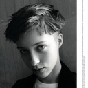
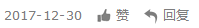

事后烟：我想性感地躺在你的歌里
专访・补梦人的狂想摇滚・2017-09-07
短短的三个月里，我看了三场事后烟的现场。第一场在5月中旬的香港，第二场在8月下旬的北京和上海。未曾留意到自己为何对他们的音乐如此情有独钟，EP和专辑循环了一遍又一遍， 然而每一次的聆听仿佛都是一次新的开始。 与乐队主创Greg在歌曲中讲述那些与熟悉爱人之间缠绵悱恻的故事相比，我与事后烟的相识，顶多只是一个凑巧的插曲而已。
那是2016年的初春，我们还窝在一栋居民大楼里，办公室里没有暖气。我们整天都在期待这个冬天快点儿结束，能早日穿上短袖，出门撒撒野。在一个倦怠的冬日下午，我百无聊赖地码着字， 一边听着YouTube给我的随机播放。当《Nothing's Gonna Hurt You Baby》中，Greg的人声进入我耳朵那一刻，仿佛身体里突然涌入了一股电流，整个人打了一个寒颤。
我停下了手边的工作，回到YouTube的播放页。对我来说，这完全是一支陌生的乐队，歌曲的播放量很高，评论也不少，不过讨论的内容多是这唱歌的是男的还是女的，这个乐队的风格像谁谁之类的。有股莫名的喜悦在我内心升腾， 我爱极了这种雌雄莫辩的嗓音，相比于以前喜欢的那些歌手，Greg一点儿都不造作。
出于职业习惯，我开始了地毯式的搜索，在YouTube个人页面，Facebook专页，Bandcamp页面等乐队官方资讯平台搜索信息。最后得到的结果并没有让我满意，大致了解了乐队简单的创作简历，以及已经发行的作品， 没有相关的报道、乐评和采访。虽然已经发行了2张EP，但原创歌曲一只手就能数出来。
我以为自己又遇到了一支歌好，口碑好，但是作品少的乐队，毕竟我最爱的万青就是这样一个鲜活的例子。事后烟的慢热，跟万青也是有得一比的，我知道他们迟早有一天会大红特红，变成独立乐迷们的心头好，只是没想到这一天来 得竟如此之快。
先说说主唱Greg吧，30岁之前，他一直生活在维姆·文德斯那部著名公路片——《德州巴黎》中的德克萨斯州，埃尔帕索。在我的印象里，这个美国南方最大的州，是牛仔与世界现场音乐的代名词。
Greg很早就开始写歌，组团，他在很多不同音乐类型的乐队里待过，不过多以爵士乐队为主。在去布鲁克林之前，他每周会在一个爵士乐队里表演四次，偶尔也会以吉他独奏的形式在饭店或是酒厂为别人表演。
他几乎花了将近10年的时间，不停地在大学里进进出出。逃课、换专业，从最开始的音乐制作、到电影创作、最后到哲学，2010年他放弃了所有的学业，连学位证书都没有拿到。他说，他的信念还跟20岁时一样，但是他花了10年 的时间从在埃尔帕索时建立的轻松艺术生活中解脱出来。
想必全世界的艺术家都想定居在纽约吧，Greg钦羡的那些艺术家马丁·斯科塞斯、鲍勃·迪伦、都曾以纽约为艺术创作场景。与其在埃尔帕索混混沌沌过日子，还不如去纽约闯一闯，抱着这种“如果我混得不好，就不再回来”的心理， Greg远走纽约，甚至连当时的女朋友也顾不得带上。
他在纽约上东区的艺术电影院贝克曼剧院找到了一份工作，从最初的前台售票员最后做到剧院经理，他说，这是他人生中第一份也是最后一份正式的工作。在这家剧院旁边的楼梯间里，他曾录制多首唱片样带，其中便包括新专辑的主打歌之一 《Each Time You Fall In Love》。
生活慢慢安定下来之后，他想要重新组团。通过朋友的介绍，他认识了同样来自埃尔帕索的键盘手Phillip，以及吉他手Randy和鼓手Jake。目前他们都辞去了主职工作，把主要的精力放在乐队的创作与表演上。
2015年以全新阵容在纽约立足的Cigarettes After Sex，自费录制了第两张EP《Affection》。除了翻唱REO Speedwagon的《Keep on Loving You》之外，这张EP只有一首原创作品，那就是与EP同名的《Affection》。 然而这一次，他们的EP并没有像3年前那样，发行之后便无人问津。经过音乐流媒体的推荐、以及乐迷之间的口口相传、社交平台的分享，一夜之间Cigarettes After Sex在网路上人气飙升。
我非常好奇，平时他是怎么创作的，比如创作前有没有什么特殊的癖好。Greg说，他写歌的时候旋律和歌词一般是同时出现的。然后他会在电脑前，用吉他把脑海中的旋律试着弹出来，再构思合适的歌词，他常常会花很长的时间在歌词上。 他喜欢在深夜或是凌晨创作，他说，这样在第二天醒来，再去找来听时，就能验证这首歌值不值得留下，如果感觉跟昨晚一样，那就会是一首满意的作品。
从他们的歌里，我们能听出来，某些音乐人和艺术家对他们作品的影响。他说，有四个重要的音乐人对他的影响非常大，Erik Satie/Francoise Hardy/Miles Davis以及Bob Dylan。从他们的声音、词曲创作、作品内涵的哲学， 对他都有所启发。我想这四个人是精神上的影响，那形式上呢，科恩和娄·里德明眼人应该也能看出来。
优秀的音乐人，其实也会是一个优秀而独特的听众。Greg的听歌品味极其广泛，他说，他最近在听法国配乐大师Francis Lai的作品，其中非常有名的两部是电影《Bilitis》（少女情怀总是诗）和《Love Story》（爱情故事）的配乐。 他对王菲和邓丽君也有所耳闻，第一次知道王菲是通过王家卫的《重庆森林》，而邓丽君是某天无意间在一家中餐厅里听到的。
在Greg的眼里，Francoise Hardy不仅是他的精神向导也是他的创作缪斯。有一次为了挽回前女友，他翻唱了她的一首《All Over the World》，录好之后，把它寄给了前女友。女友收到这盒录音带时，立马回心转意了。 只不过没过多久，两人还是分开了。Greg告诉我，现在他们依然会跟以前一样去翻唱自己喜欢的作品，重新去诠释它们，只是有些已经翻唱的作品，还没有找到机会发表。
小时候，Greg的梦想是当一个漫画艺术家，希望有朝一日能创作出DC或者漫威公司发行的超级英雄故事。后来接触了音乐和创作，就彻底把这事儿给忘了。如果在创作音乐之外，还有时间做点儿别的，那一定就是拍电影了。他的兴趣爱好不是很多， 除了音乐之外，就是阅读和电影，平时也比较宅。他还告诉我最近他看了，琼·狄恩的《缓缓走向伯利恒》和维姆·文德斯的《欲望之翼》。
这个夏天事后烟开始在朋友圈火起来，乐迷们喜欢把他们跟Bedhead/Low/Red House Painters联系在一起，也给他们打上了“氛围流行”、“梦幻流行”、“慢核”等标签。Greg说，其实风格好难定义，他们并没有固定地去做这样的设定， 如果一定要找一些词语来形容他们的音乐，那就用朦胧而甜蜜的浪漫民谣吧！
8月份中国巡演的安可曲，他唱了一首“新歌”，其实耳尖的朋友应该听出来了这首《Please Don't Cry》，曾经收录在他们的一张未正式发行的Demo合辑《Romans 13:9》里。Greg说，他们现在会排练、录制之前写的歌，如果重新录制的版 本比之前的更好，他就会把之前发布在网络上的旧版本删掉。
5月份的亚洲之行带给乐队蛮多惊喜和感动的，Greg说，那是他第一次来亚洲。去过不少曾经很向往的城市，比如香港和台湾，最令他难忘的是在吉隆坡，全场的乐迷几乎每首歌都能跟着他合唱。北京和上海场结束之后，在他们的“事后趴”里， 我问他们对这场中国巡演有什么特别的看法。Greg说，之前常常有乐迷在脸书给他们留言，而今终于可以在这两个城市跟大家见面，一切都那么美好、顺利，谢谢你们的喜爱与支持。如果下次还有机会，我们想拜访更多的城市。
虽然我常常抱着迷妹的心理去看演出，不过事后烟是唯一一支我心水已久，但只想安静看完演出之后再静静离去的乐团。可是每次都无心插柳地去了他们演出结束的乐迷趴，第一次在香港的街头喝到凌晨3点，最后还被警察驱赶；在北京的School 酒吧待到酒吧打烊，在上海的DOPE认识了一大帮有意思的新朋友。
这一刻真是无比的轻松，我完成了一个小小的心愿，如愿以偿地看了表演，做了采访，还一起喝了酒，还码了这一篇我觉得特别寒碜的文章。Greg写的歌，就像一封写给旧情人的私密信件。也许在他们的巡演途中，他已经遇到过各种与之亲密的lovers， 不知道她们是否也抱有这样的幻想——但愿有一天，他能把“我”写进歌里。
采访/编辑：补梦人的狂想摇滚
文章作者 |
版权声明 |
||
|  |
补梦人的狂想摇滚 情癡 情呆 行怪 言狂 冥頑 |
「落网」专栏内文章，未经作者及「落网」许 可，不得转载、摘编。一经发现，自行承担全 部法律责任。 谢谢合作。 |
|
评论 ·126
最新评论
MINEBEE要像狗一样奔跑，
听完之后 瞬间感觉一个星期的感冒被治好了
